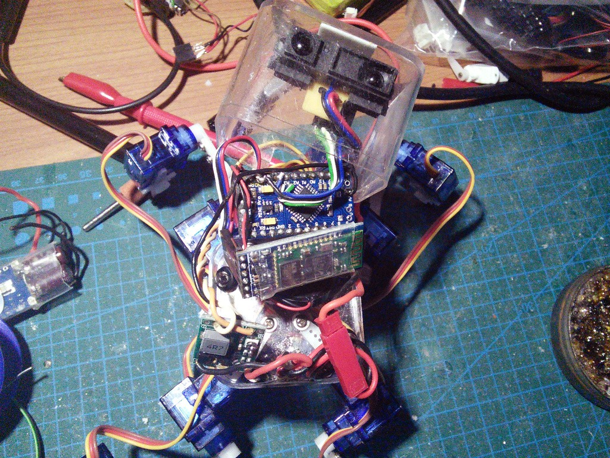

One More Sensor¶
Published on 2014-12-23 in µKubik quadruped robot.
While I still can’t get myself to write the code for using the accelerometer+gyroscope properly, I did recently do a small modification to this robot. I got myself a bunch of coin-sized 3A voltage regulators, so I replaced the UBEC that I used in this robot with one of those. That, together with shorter wires, saved me some space inside, which I used to add a Sharp distance sensor, and to position the accelerometer module a little better.
Now I can at least try to write some simple obstacle avoidance code…